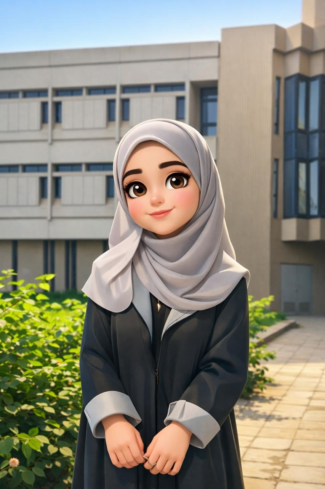

| Tool | Link |
|---|---|
| Python | Python Website |
| Replit | Replit Website |
| MySQL | MySQL Website |
My name is Marah Azzam and I am from Irbid, Jordan. I study Computer Information Systems (CIS). This major focuses on using computer technologies and information systems to help organizations manage data and improve their work. It combines programming, databases, and information technology. I enjoy learning about technology and developing my skills in this field.
Contact Me